Crea o selecciona un proyecto a la izquierda y lanza shell, claude, codex u opencode.
El navegador no puede ejecutar procesos por sí solo. Inicia el bridge (sin dependencias) una vez:
node bridge/frap-bridge.js
Imprime una URL con el token: ábrela, o pega el token aquí.